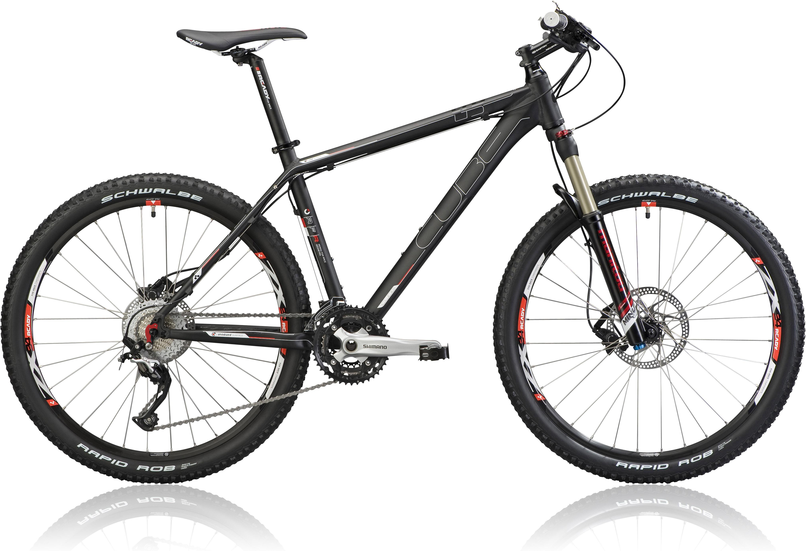

Хардтейлы LTD-серии представляют собой идеальные образцы спортивного инвентаря. Как для марафонов, поездок по ровной поверхности или грунтам, так и в качестве тренажера LTD-серия характеризуется легкостью и прочностью. Для того чтобы сделать LTD-серию мультидисциплинарной, мы установили на велосипеды 100-мм амортизационную вилку, а также высококачественные и прочные компоненты. В основе велосипедов LTD лежит рама из высококачественного алюминиевого сплава 7005 с двойным баттингом. Для большей жесткости рулевой колонки и каретки, мы использовали овализированные трубы рамы.Хардтейлы LTD-серии представляют собой идеальные образцы спортивного инвентаря. Как для марафонов, поездок по ровной поверхности или грунтам, так и в качестве тренажера LTD-серия характеризуется легкостью и прочностью. Для того чтобы сделать LTD-серию мультидисциплинарной, мы установили на велосипеды 100-мм амортизационную вилку, а также высококачественные и прочные компоненты. В основе велосипедов LTD лежит рама из высококачественного алюминиевого сплава 7005 с двойным баттингом. Для большей жесткости рулевой колонки и каретки, мы использовали овализированные трубы рамыХардтейлы LTD-серии представляют собой идеальные образцы спортивного инвентаря. Как для марафонов, поездок по ровной поверхности или грунтам, так и в качестве тренажера LTD-серия характеризуется легкостью и прочностью. Для того чтобы сделать LTD-серию мультидисциплинарной, мы установили на велосипеды 100-мм амортизационную вилку, а также высококачественные и прочные компоненты. В основе велосипедов LTD лежит рама из высококачественного алюминиевого сплава 7005 с двойным баттингом. Для большей жесткости рулевой колонки и каретки, мы использовали овализированные трубы рамыХардтейлы LTD-серии представляют собой идеальные образцы спортивного инвентаря. Как для марафонов, поездок по ровной поверхности или грунтам, так и в качестве тренажера LTD-серия характеризуется легкостью и прочностью. Для того чтобы сделать LTD-серию мультидисциплинарной, мы установили на велосипеды 100-мм амортизационную вилку, а также высококачественные и прочные компоненты. В основе велосипедов LTD лежит рама из высококачественного алюминиевого сплава 7005 с двойным баттингом. Для большей жесткости рулевой колонки и каретки, мы использовали овализированные трубы рамы